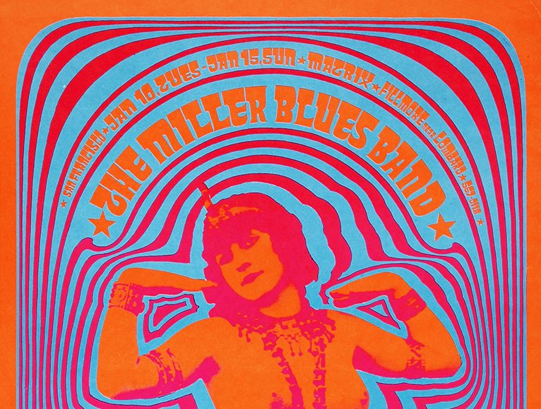
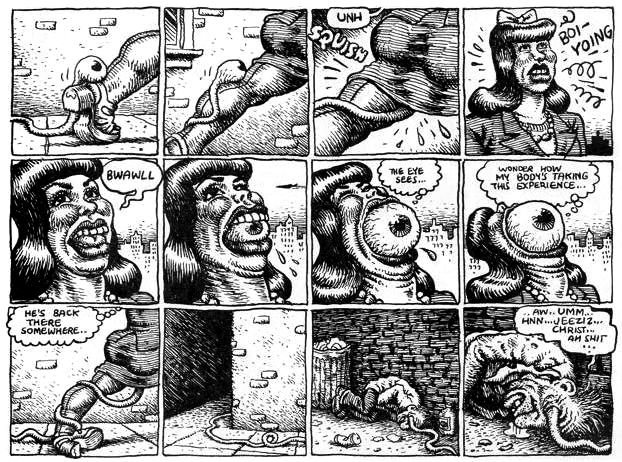

style
psychedelic art
Voyage To Paradice
Where the graphics of the psychodelic underground confusing, messy and largly unreadable or a enlightening voyage to another dimension?
Tune your self in to there tripping induced experiential epoc, and there visual world of sheer visual energy, becomes less alienating. The psy- chedelic visual graphic model, was not so much a means of broadcasting information, but more a visual apparatus; advertising a trip to a utopian arti cial paradise. At rst glance the psychedelic graphic artist of 60s seemed to construct surreal concepts, distorted and fairly often-unreadable fonts, and images that where abstract and confusing. It’s hard to aprehend logical reason- ing for advertising, that no one can really understand. In a way is as if they had no attention of broadcast any information to anyone, but perhaps that was the whole point. A visual languegue of which cant be understand unless you have already jioned them on there voyage to this pychedelic dimension. Although these posters where in theory advertising music gigs and fes- tivals of the underground, in practice the very intent of their posters lent more towards circumnavigating the rational and working on the level of pure stimulus, becoming part of the visual energy of their world. the vis- uala Artist of the pychodelic movment constructed a visual astehtic back- drop for there tripping utopian world of which they wanted to inhabbit.
More Punk Than Hippy
how to deffine the comic strips of Rupert crump?
In many ways the exeedingly frank depictions of sucking and fucking in the comics of rupert crump can be viewed as a taboo busting satirical tool con- fronting a hyprcirtcal establimenant with what they had long made a dirty secret. His comic strips are infused with a nihilistic attitude that one would at rst not attribute to the ower children of the hippy generation. He seems to ditch the sincerity of a modernist hippy utopian vision for a more post- modern satirical attitude. Positioning him as the 60s came to an end a as a kind of transitional artist from pycherlic underground of th 60s to the punk underground of 70s.